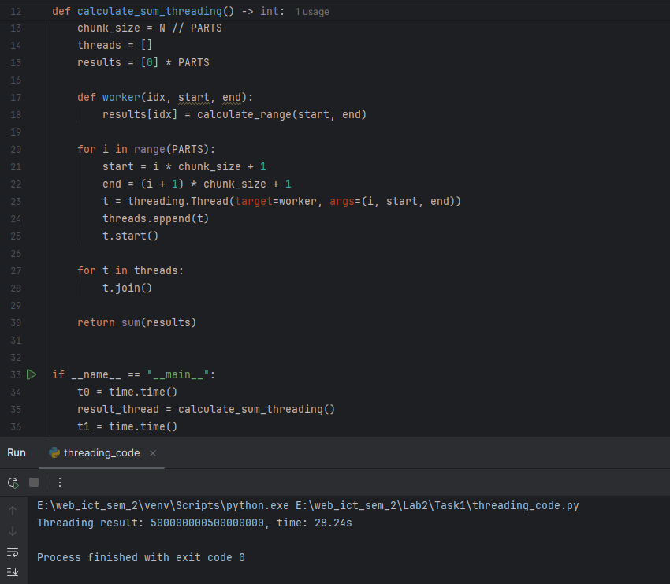
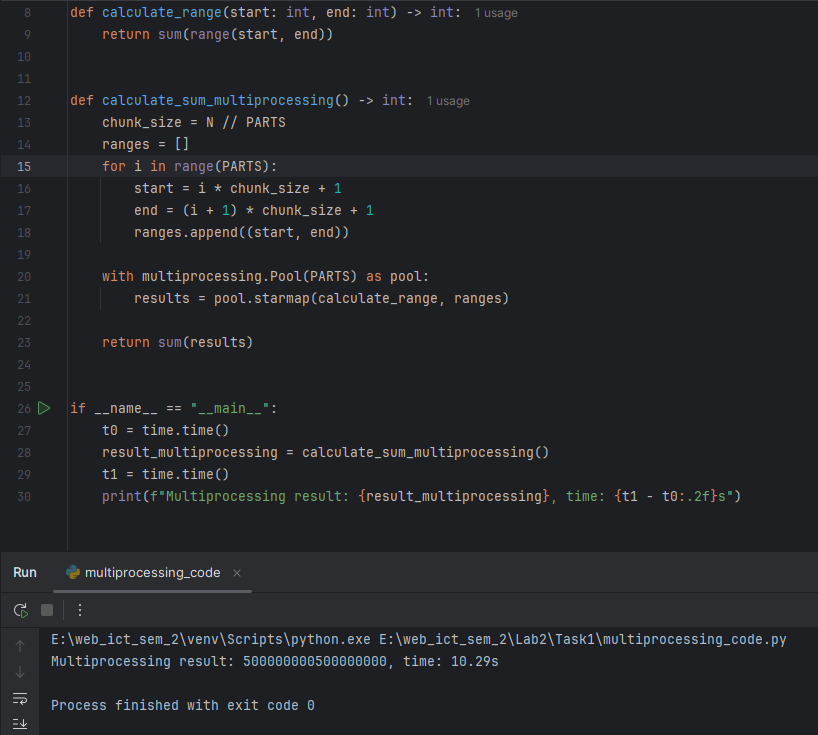
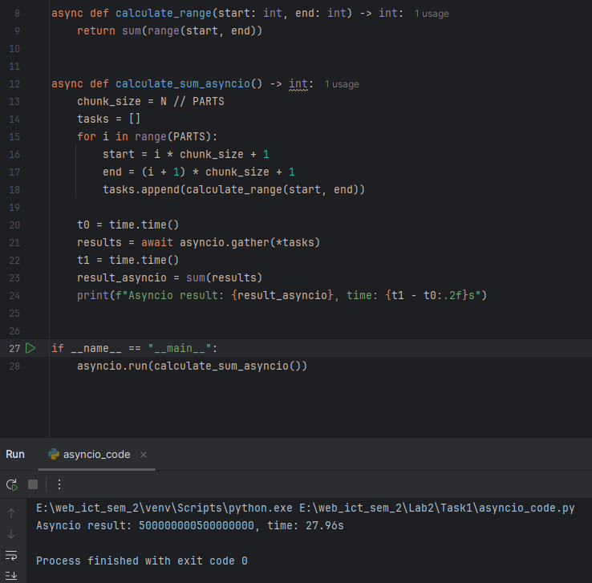
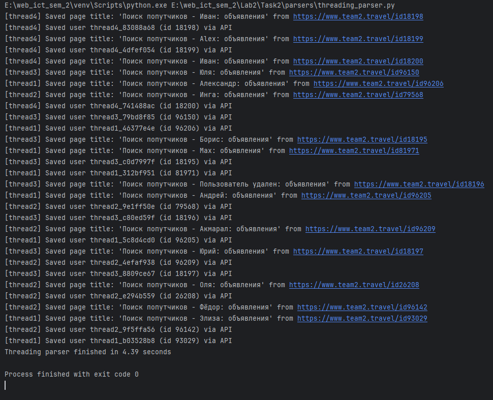
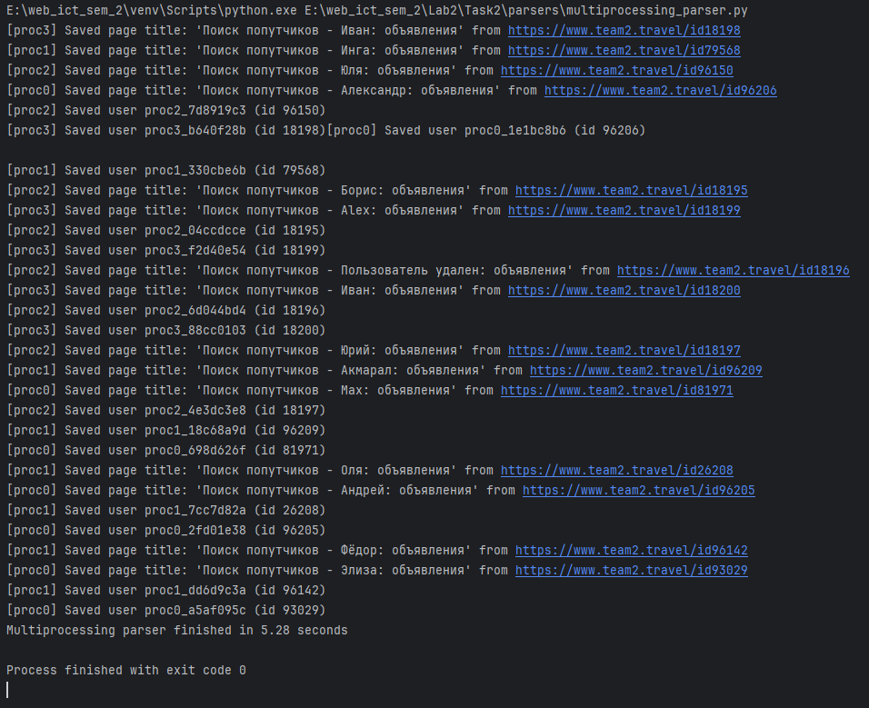
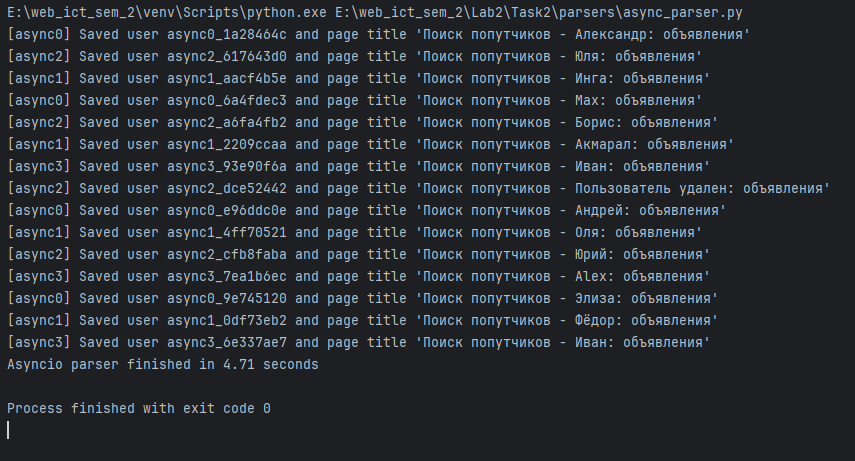

Лабораторная работа 2. Потоки. Процессы. Асинхронность.
Ход работы
Задание 1
threading
Файл threading_code.py:
import threading
import time
N = 10**9
PARTS = 5
def calculate_range(start: int, end: int) -> int:
return sum(range(start, end))
def calculate_sum_threading() -> int:
chunk_size = N // PARTS
threads = []
results = [0] * PARTS
def worker(idx, start, end):
results[idx] = calculate_range(start, end)
for i in range(PARTS):
start = i * chunk_size + 1
end = (i + 1) * chunk_size + 1
t = threading.Thread(target=worker, args=(i, start, end))
threads.append(t)
t.start()
for t in threads:
t.join()
return sum(results)
if __name__ == "__main__":
t0 = time.time()
result_thread = calculate_sum_threading()
t1 = time.time()
print(f"Threading result: {result_thread}, time: {t1 - t0:.2f}s")
Результат выполнения:

multiprocessing
Файл multiprocessing_code.py:
import multiprocessing
import time
N = 10**9
PARTS = 5
def calculate_range(start: int, end: int) -> int:
return sum(range(start, end))
def calculate_sum_multiprocessing() -> int:
chunk_size = N // PARTS
ranges = []
for i in range(PARTS):
start = i * chunk_size + 1
end = (i + 1) * chunk_size + 1
ranges.append((start, end))
with multiprocessing.Pool(PARTS) as pool:
results = pool.starmap(calculate_range, ranges)
return sum(results)
if __name__ == "__main__":
t0 = time.time()
result_multiprocessing = calculate_sum_multiprocessing()
t1 = time.time()
print(f"Multiprocessing result: {result_multiprocessing}, time: {t1 - t0:.2f}s")
Результат выполнения:

asyncio
Файл asyncio_code.py:
import asyncio
import time
N = 10**9
PARTS = 5
async def calculate_range(start: int, end: int) -> int:
return sum(range(start, end))
async def calculate_sum_asyncio() -> int:
chunk_size = N // PARTS
tasks = []
for i in range(PARTS):
start = i * chunk_size + 1
end = (i + 1) * chunk_size + 1
tasks.append(calculate_range(start, end))
t0 = time.time()
results = await asyncio.gather(*tasks)
t1 = time.time()
result_asyncio = sum(results)
print(f"Asyncio result: {result_asyncio}, time: {t1 - t0:.2f}s")
if __name__ == "__main__":
asyncio.run(calculate_sum_asyncio())
Результат выполнения:

Итоговые результаты
| Подход | Количество потоков/процессов/задач | Время выполнения |
|---|---|---|
| Threading | 5 потоков | 28.24 секунд |
| Multiprocessing | 5 процессов | 10.29 секунд |
| Asyncio | 5 задач | 27.96 секунд |
Выводы
- При задачах с высокой нагрузкой на CPU наибольший выигрыш даёт запуск нескольких процессов через модуль multiprocessing. Каждый процесс работает на своём ядре, что ускоряет вычисления.
- Механизмы потоков и корутин при чисто вычислительной нагрузке не улучшают производительность. Первый "тормозится" GIL, а второй основан на кооперативной многозадачности, а не на настоящем параллелизме.
Задание 2
Одним из требований задания был парсинг страниц для заполнения базы данных из ЛР1. Вариантом прошлой работы было создание сервиса для поиска попутчиков в поездку. Был найден сервис team2.travel, на котором пользователи создают запросы на совместную поездку куда-либо. Было выбрано 10 страниц для парсинга контента. Из каждой страницы извлекался заголовок и сохранялся в базу данных. Также извлекались данные пользователей и складывались в базу данных.
Была переиспользована модель User и добавлена модель Page.
import uuid
from datetime import datetime
from typing import Optional
from sqlmodel import SQLModel, Field
class User(SQLModel, table=True):
id: uuid.UUID = Field(default_factory=uuid.uuid4, primary_key=True, index=True)
username: str = Field(index=True, unique=True, nullable=False)
email: str = Field(index=True, unique=True, nullable=False)
is_admin: bool = Field(default=False)
first_name: Optional[str] = Field(default=None)
last_name: Optional[str] = Field(default=None)
age: Optional[int] = Field(default=None)
description: Optional[str] = Field(default=None)
password_hash: str
class Page(SQLModel, table=True):
id: uuid.UUID = Field(default_factory=uuid.uuid4, primary_key=True, index=True)
url: str = Field(index=True, nullable=False)
title: Optional[str] = Field(default=None)
fetched_at: datetime = Field(default_factory=datetime.utcnow, nullable=False)
Для более надёжного сбора информации был выбран метод использовать api. Полученная информация собирается в модель и сохраняется в базе данных.
threading
Результат выполнения:

multiprocessing
Результат выполнения:

asyncio + aiohttp
Результат выполнения:

Итоговые результаты
| Подход | Количество потоков/процессов/задач | Время выполнения |
|---|---|---|
| Threading | 4 потока | 4.39 секунд |
| Multiprocessing | 4 процесса | 5.28 секунд |
| Asyncio | 4 задачи | 4.71 секунд |
Выводы
- При ограниченном числе сетевых обращений вполне достаточно использования потоков (threading).
- Если же требуется выполнить множество запросов, лучше применять asyncio — он обеспечивает высокую «лёгкость» и низкие накладные затраты.
- Модуль multiprocessing для лёгких сетевых операций избыточен: расходы на запуск процессов и межпроцессное взаимодействие перевешивают выигрыш.